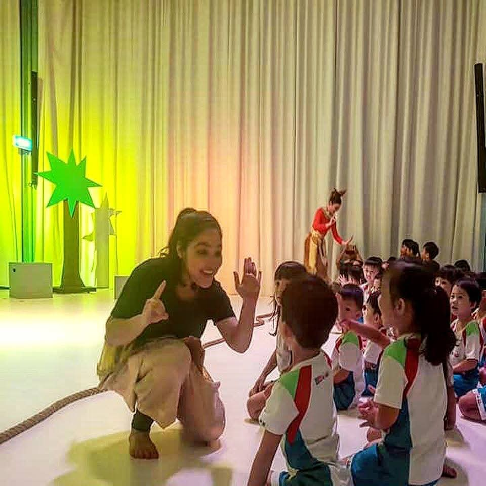
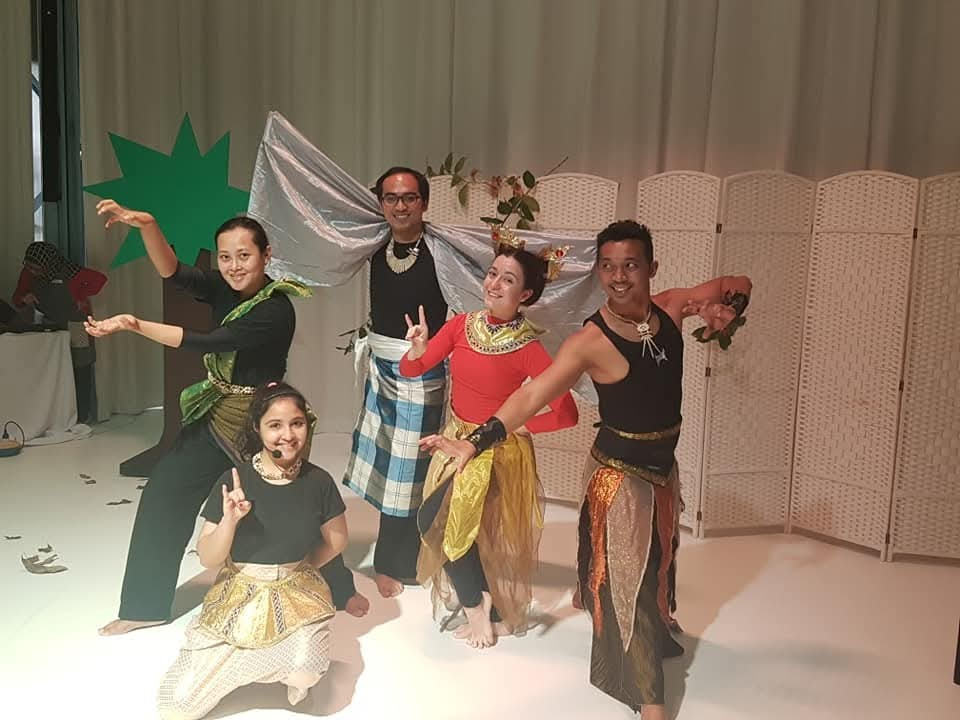

Storytelling & communication sessions
Explore voice, expression, story structure and audience connection through an interactive session shaped around the learners.
Some lessons become memories. Help students discover storytelling as an art, practise expression and connect with history, culture, heritage and values.
Discuss a school programme
Young participants in a performing arts activity
Explore voice, expression, story structure and audience connection through an interactive session shaped around the learners.
Bring mythology, folklore and stories from around the world into a theatrical-style performance with questions and participation.
Discuss age groups, themes, guidelines, judging criteria, hosting and showcase opportunities for young storytellers.
For suitable school theatres or auditoriums, watch a character-led story and explore its questions, choices and ideas through discussion.
Share the pupil age group, approximate numbers, learning objective, available facilities and preferred date.

Storytelling gives students a way to organise ideas and express them to others. We can shape a programme around culture, values, communication or a school event, with the age group and learning objective guiding the experience.
Explore the storytelling experienceShare the pupil age group, approximate numbers, learning objective, available facilities and preferred date.
Let’s create your story